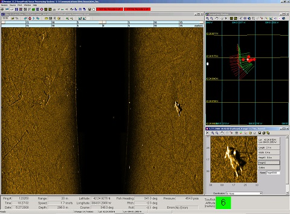

I would like to thank you for your time in reading my online resume. I am hoping you will see that with my background, I will be a perfect fit for you in your training division. My expertise in underwater sonar has proven to be a great assest to the citizens of the State of Georgia.
Since 2009, I have been the head of the sonar team for the Georgia Department of Natural Resources Law Enforcement Division.
When I first started, it was just me and a single Klein 3900 side-scan sonar
traveling the State to attempt to assist in various body recovery situations. Since that time we have grown to 16 operators, 6 side-scan sonars,
1 sector scan sonar, and 1 remote operated vessel.
We currently use a Klein 3900 side-scan sonar,
a
Kongsburg Mesotech Sector Scan , and a
VideoRay Pro 4 ROV. So far, we have been able to locate victims in as little as 4 1/2 minutes with this technology.
The State averages 60 drownings per year, of these the sonar team gets called in for approximately 50 per year. I have personally worked 15 this year alone, bringing much
needed closure to families.
Aside from body recover, I have also participated in numerous other searches for items such as cars, planes, boats, and even ATM machines. In
addition to all my experience with the equipment itself, I am also a Georgia Peace Officer Standards and Training (P.O.S.T.) Instructor. This training
consisted of an in depth course on how to teach to various types of people.
